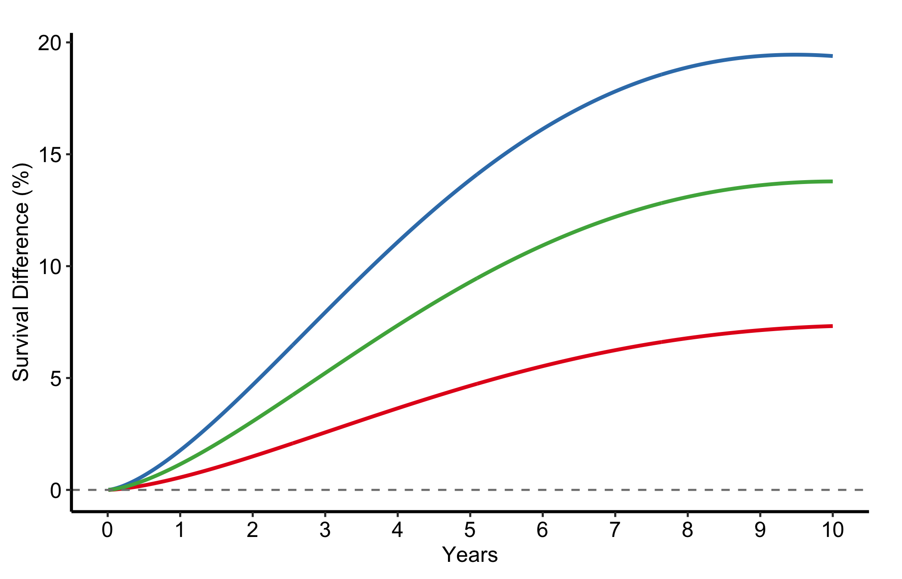

A hazard ratio tells a reviewer that one treatment is better, but it does not tell a patient what the choice is worth to them. These two figures translate a survival comparison into the language clinicians and patients actually use. The survival difference plots the gap between two survival curves over time: how many more patients out of a hundred are still alive at five years if they take the better arm. The number needed to treat (NNT) inverts that gap into a count: how many patients you must treat to prevent one event by a given time.
Reach for the survival difference when you want to show the size and timing of a benefit and whether its confidence band clears zero. Reach for NNT when you want the bedside number, the figure that makes a small absolute benefit feel concrete or an over-hyped one feel modest. Both functions, from hvtiPlotR (Ehrlinger 2026), take a pre-computed data frame and a single call: you name the estimate column and its CI bounds, then decorate the returned ggplot.
12.2 The data it needs
Both functions expect one row per time point with an estimate column and explicit lower/upper CI columns that you name in the call. sample_nnt_data() generates two survival curves from a hazard-ratio contrast and computes NNT and ARR (absolute risk reduction) at each time point with CI bounds. The groups argument names the arms and sets their hazard multipliers; here the internal thoracic artery graft (ITA) carries 0.75 times the hazard of the saphenous vein graft (SVG) reference.
time arr arr_lower arr_upper nnt nnt_lower nnt_upper
1 0.01000000 0.001548865 -0.03849194 0.04158967 NA NA NA
2 0.05006012 0.017341632 -0.13725732 0.17194059 NA 581.5963 NA
3 0.09012024 0.041863418 -0.22369142 0.30741825 NA 325.2897 NA
4 0.13018036 0.072628007 -0.30691800 0.45217401 NA 221.1538 NA
5 0.17024048 0.108520503 -0.38909707 0.60613807 921.4849 164.9789 NA
6 0.21030060 0.148855060 -0.47112585 0.76883597 671.7944 130.0668 NA
12.3 Build it
The NNT curve takes the pre-computed estimate and its CI columns directly. The default estimate_col is "nnt", so you need only name the CI bounds.
Figure 12.1: Number needed to treat over follow-up with its confidence band, falling as the survival gap widens
12.4 Read it
An NNT curve falls over time, and that fall is the whole point. Look for:
The downward slope. Early in follow-up the two arms have barely diverged, so you must treat a great many patients to prevent one event and the NNT is large. As the survival gap widens the NNT drops: the same treatment buys more per patient the longer you wait. Read the value at the time horizon that matters for your decision, not at the visual endpoint.
The confidence band. A wide band, especially early when NNT is large and unstable, means the count is poorly determined. If the band runs off to very large values, the benefit at that time is essentially unmeasurable.
The y-axis scale. NNT is a ratio and blows up when the absolute benefit is near zero. A capped axis (here 0 to 50) keeps the figure readable, but remember the curve is heading to infinity at time zero, not flattening.
12.5 Variations
12.5.1 Absolute risk reduction
The same data plotted as ARR (%) by setting estimate_col = "arr" and the matching CI columns. ARR is the reciprocal of NNT and rises over time as the benefit accumulates, which many readers find easier to take in than a falling count. Show whichever frames your benefit most honestly; show both if a reviewer asks.
Figure 12.2: Absolute risk reduction over follow-up, the reciprocal of NNT, rising as the benefit accumulates
12.5.2 Survival difference
hv_survival_difference() plots the difference S_2(t) - S_1(t) between two groups over time with an optional confidence band. sample_survival_difference_data() generates the point-wise difference with bootstrap CI bounds from a hazard-ratio contrast. Both arms are simulated at the same n to keep the band width realistic.
The dashed line at zero is the no-benefit baseline; a positive difference means the treatment group has higher survival. No grouping argument is needed for the two-group case. Read the figure two ways: the height of the curve is the size of the benefit at each time, and the moment the lower edge of the band clears zero is when the benefit becomes statistically convincing.
Figure 12.3: Survival difference between two groups over time with its confidence band and a dashed no-benefit baseline
12.5.3 Multiple comparisons
Combine several two-group differences into one long data frame and use group_col to overlay them. This is how we put one reference arm against several alternatives in a single panel: each line is one contrast, and the ones that sit highest and clear zero earliest are the comparisons with the strongest benefit.
d1 <-sample_survival_difference_data(groups =c("Medical Mgmt"=1.0, "TF-TAVR"=0.70), seed =1L)d1$comparison <-"TF-TAVR vs Medical Mgmt"d2 <-sample_survival_difference_data(groups =c("TA-TAVR"=0.90, "TF-TAVR"=0.70), seed =2L)d2$comparison <-"TF-TAVR vs TA-TAVR"d3 <-sample_survival_difference_data(groups =c("AVR"=0.80, "TF-TAVR"=0.70), seed =3L)d3$comparison <-"TF-TAVR vs AVR"plot(hv_survival_difference(rbind(d1, d2, d3), group_col ="comparison")) +scale_colour_brewer(palette ="Set1", name =NULL) +scale_fill_brewer(palette ="Set1", guide ="none") +geom_hline(yintercept =0, linetype ="dashed", colour ="grey50") +scale_x_continuous(limits =c(0, 10), breaks =0:10) +labs(x ="Years", y ="Survival Difference (%)") +theme_hv_manuscript()

Figure 12.4: Several two-group survival differences overlaid in one panel, one line per contrast against a shared reference arm
12.6 Pitfalls
Quoting NNT at time zero. NNT is a reciprocal, so it explodes near the start of follow-up where the arms have not yet diverged. Always report it at a named horizon, never as a single headline number with no time attached.
Mismatched CI columns. NNT and ARR each have their own pair of bounds. Plot ARR with the NNT bounds and the band will be wrong. Name the CI columns that go with the estimate you are showing.
Reading the survival difference where the band straddles zero. A positive point estimate whose confidence band still includes zero is not yet a demonstrated benefit. The figure is most honest when you let the band do the arguing.
Forgetting the zero line. The dashed reference at zero is what makes the survival-difference figure readable. Add the geom_hline() every time; without it the eye has no anchor for “no benefit”.
Ehrlinger, John. 2026. hvtiPlotR: HVTI Ggplot2 Themes and Clinical Plot Functions for the Cleveland Clinic Heart & Vascular Institute. https://github.com/ehrlinger/hvtiPlotR.